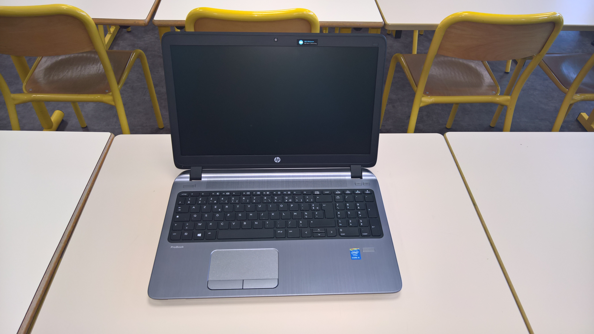

Ce projet était tout particulièrement intéressant à réaliser. Le but de celui-ci consistait à créer une clé USB YUMI.
Une clé YUMI est un outil qui permet de faire des multiboots à partir d'une seule clé ; plusieurs outils peuvent y être installés (antivirus, Debian, Windows).
Les ISO des outils voulus nous ont été fournis par le lycée, et nous avons été lâchés avec un simple tutoriel. Le tutoriel n'étant pas complet, ce sont nos expérimentations qui ont permis la création de la clé.
Pour éviter les problèmes sur le réseau du lycée, il nous a été fourni des PC portables et des "tiny", nous permettant de faire l'exercice et d'expérimenter sans nous soucier de faire planter le réseau.
En parallèle de cela, le binôme devait réaliser un comparatif de gestionnaires de mots de passe. Il a donc fait cette tâche, en utilisant plusieurs gestionnaires, en créant plusieurs adresses mail, etc.
La finalité de cette activité résultait dans un test public et un exposé sur tout le travail réalisé. Toutes les connaissances ont dû être mobilisées pour cet exposé.
